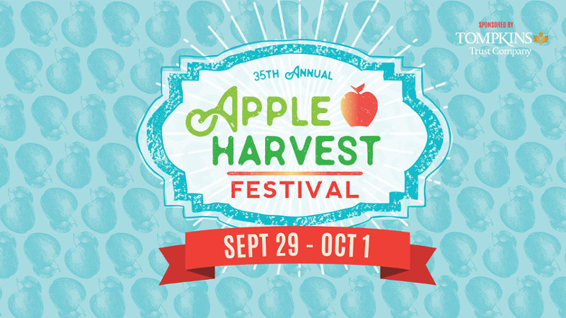
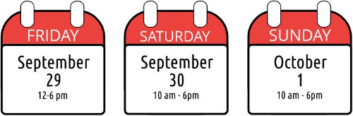

Ithaca's Apple Harvest Festival
Presented by Tompkins Trust Company
The 35th Anniversary of the Great Downtown Ithaca Apple Harvest Festival is set to take place:
Ithaca's premier event of the Fall, Apple Harvest Festival is a three- day celebration of food, rides, games, more than 100 vendors and, of course, APPLES! This spectacular celebration also kicks off Finger Lakes Cider Week 2017! Come taste regional ciders and talk with the makers.
Over 100 vendors will be selling unique apple varieties, hot apple cider donuts, kettle corn, local farm fresh baked goods and a multitude of around the world specialties. Local farmers are on site selling everything from tasty apple beverages to local pumpkins and of course, apples, apples, and more apples. Wineries and cideries have regional beverages available for tasting and purchase. And, there will be more, so much more!
Parking for the festival will be available in the Green, Seneca and Cayuga street garages for $5. For more Apple Harvest information, visit downtownithaca.com or check out our Facebook Event Page.